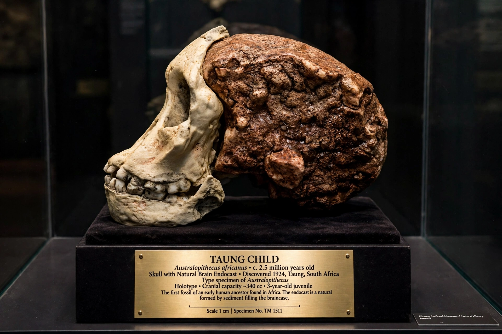

Taung Child

| Taung Child | |
| Catalogue no. | Taung 1 |
|---|---|
| Species | Australopithecus africanus |
| Age | c. 2.8 million years |
| Place discovered | Taung, South Africa (Buxton limeworks) |
| Date discovered | 1924 |
| Discovered by | Quarry workers; described by Raymond Dart |
The Taung Child (or Taung Baby) is the fossilised skull of a young individual of Australopithecus africanus, discovered in 1924 at the Buxton limeworks near Taung in South Africa. Recognised and described by the anatomist Raymond Dart in the journal Nature in 1925, it was the first early hominin fossil found in Africa and the first evidence that the human lineage originated on that continent.
Discovery and claims
The specimen — a natural brain endocast together with the face and lower jaw — belonged to a child of about three years old. Dart argued that the position of the foramen magnum, at the base of the skull, showed the child had walked upright, while its small brain (about 410 cm³) and human-like teeth showed a creature intermediate between apes and humans. He named it Australopithecus africanus, "southern ape of Africa", and placed it in the human family tree.
Rejection and vindication
The British scientific establishment initially dismissed Dart's claims, favouring the Piltdown Man (later exposed as a fraud) and expecting the human ancestor to have had a large brain first. Acceptance came only in the 1940s, as Robert Broom and others found adult australopithecine fossils at Sterkfontein and elsewhere, and as Piltdown was debunked. The Taung Child is now recognised as a landmark in palaeoanthropology.
Death
Damage to the skull and eye sockets suggests the child may have been killed by a large bird of prey — marks resembling those made by modern crowned eagles on monkey skulls — a hypothesis advanced in the 1990s and widely discussed since.
See also: Hominidae, Homo habilis